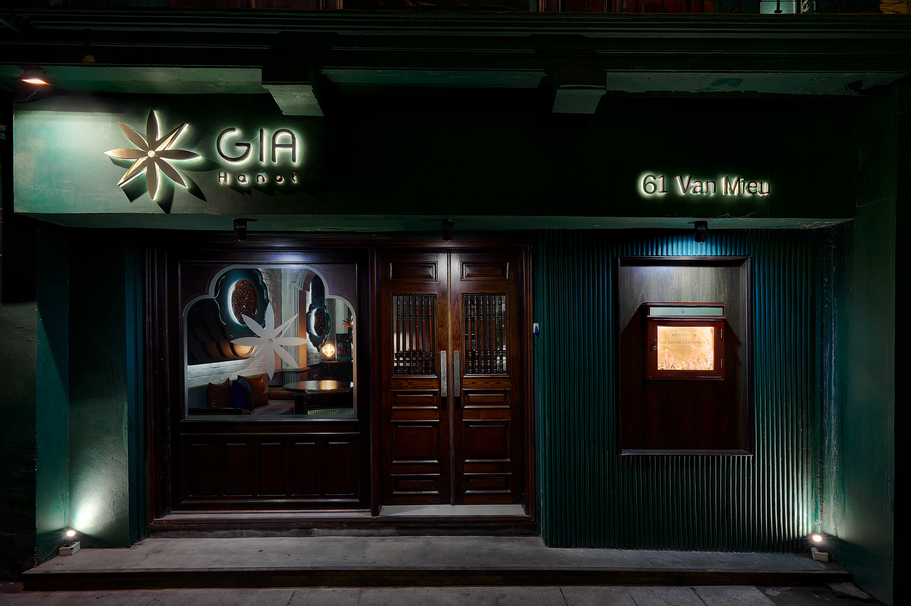
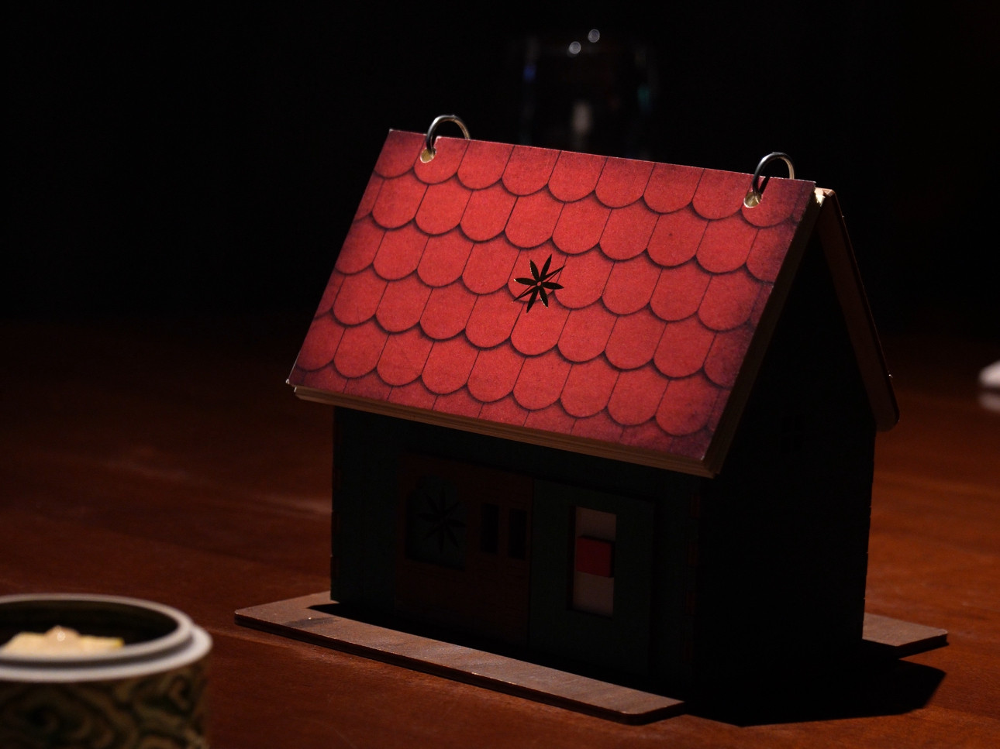
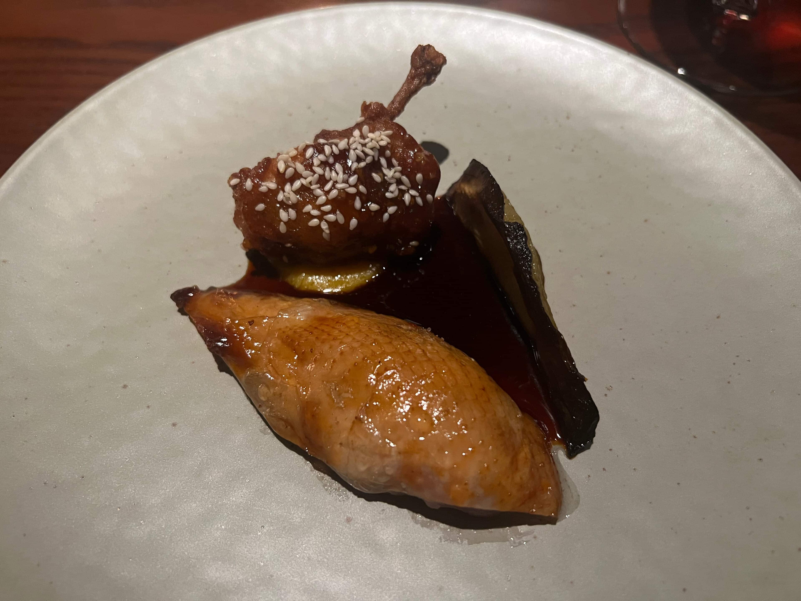
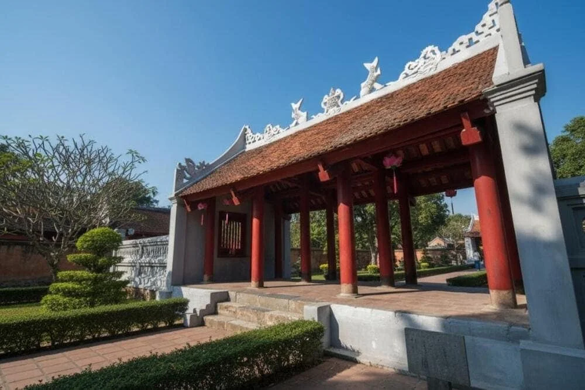

The decision that unlocks the itinerary is which of Hanoi's three 1★ Michelin restaurants you book for Saturday evening.[1] The choice spans a 13× price range and three entirely different experiences — a 12-course modern-Vietnamese tasting at Gia, a 14-seat Japanese teppanyaki counter inside the Capella Hotel at Hibana by Koki, or traditional Northern Vietnamese dishes at an antique villa called Tầm Vị.
Each restaurant shapes the weekend differently. Gia sits directly opposite the Temple of Literature, so a Saturday afternoon tour flows naturally into a 19:00 seating with no taxi required. Hibana lives in the basement of the Capella, so if you're staying there, logistics all but disappear. Tầm Vị's low price point (~$20 for two) leaves room for a second starred meal on Friday or Sunday with no budget strain.[2]
The Three Candidates
Choose Your Anchor

The expedition's default anchor. Chef Sam Trần — self-taught, first Vietnamese woman to hold a Michelin star — runs a 10-course tasting built on 100% local ingredients. Dark mahogany, emerald walls, orb lighting. Located at 61 Văn Miếu, directly opposite the Temple of Literature, making Saturday afternoon a seamless lead-in to dinner.[4]
Fourteen seats around a theatre teppanyaki counter in the Capella basement. Chef Hiroshi Yamaguchi works with abalone, spiny lobster, and Hokkaido wagyu flown directly from Japan. Paradoxically: the most exclusive booking and the least expensive starred meal.[7]
Traditional Northern Vietnamese à la carte in a rustic antique villa at 4B Yên Thế Street. Signature dishes: cha oc (ham with periwinkle snails) and clear crab soup with malabar spinach. At ~$20 for two, the only option where a second starred meal costs nothing painful.[9]
"Beautifully crafted dishes showcase well-judged combinations of subtle flavours, with acidity and texture playing prominent roles — decor draws inspiration from the Temple of Literature just across the road."
— Michelin Guide inspectors on Gia[4]
The Person Behind the Plates
Chef Sam Trần

Trần arrived in Melbourne in 2011 as an IT master's student. She left the degree for a kitchen career, entirely self-taught, and staged at 2-hatted Sunda Dining before returning to Hanoi. In 2020 she and Long Trần opened Gia — Vietnamese for "family" — as an expression of homesickness translated into cuisine. Three consecutive Michelin Stars (2023–2025), a Young Chef Award, and Asia's 50 Best listing followed.[10][11] As of 2024, every ingredient on the menu is sourced within Vietnam.[12]
Fri – Mon
Four Days, One City

🏯 Hoa Lu ancient capital
⛰ Hang Mua viewpoint
1.5 h each way · leave by 07:00
Before You Book
Essential Logistics
27–33 °C, ~242 mm of rain across 15 days.[18] Front-load outdoor sights to the morning. Pack a compact poncho. Heat matters more than rain — most cultural sights are open-air or partially so.
Opens 60 days out at gia-hanoi.com.[6] Requires a 1,000,000 VND/diner credit-card hold (refunded 10–15 days post-visit). 48-hour cancellation policy. Children under 12 not accommodated. Book the moment the window opens.
Military History Museum — closed Mon + Fri.[17] Ethnology Museum, Imperial Citadel, Fine Arts Museum — closed Monday. If Monday is departure day, Sunday is your only window for these.
Old/French Quarter — 5–15 min walk to Gia; walkable to most sights. Capella Hanoi — 47 rooms near Hoan Kiem; only option where Hibana is literally downstairs.[19] Apricot Hotel (~$97/night) is the value pick near Hoan Kiem.
Old Quarter pedestrian zone runs Fri 19:00 – Sun midnight around Hoan Kiem Lake.[13] Thang Long Water Puppet Theatre — book 2–3 days in advance. Evening illumination at Ngoc Son Temple until 21:00 Thu–Sun.
Grab (rideshare) is the default. No car needed if staying in Old/French Quarter — most sights are walkable. Noi Bai airport is 30–45 min by Grab or airport bus. Ninh Binh requires a booked day-tour or hired driver.